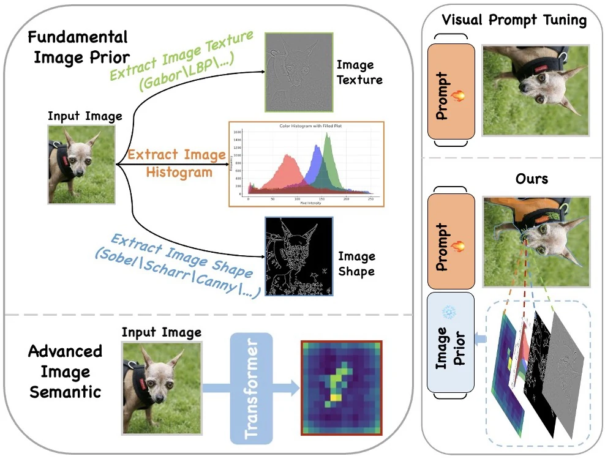
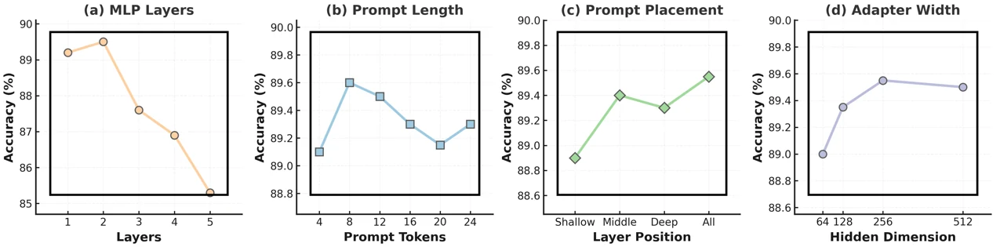
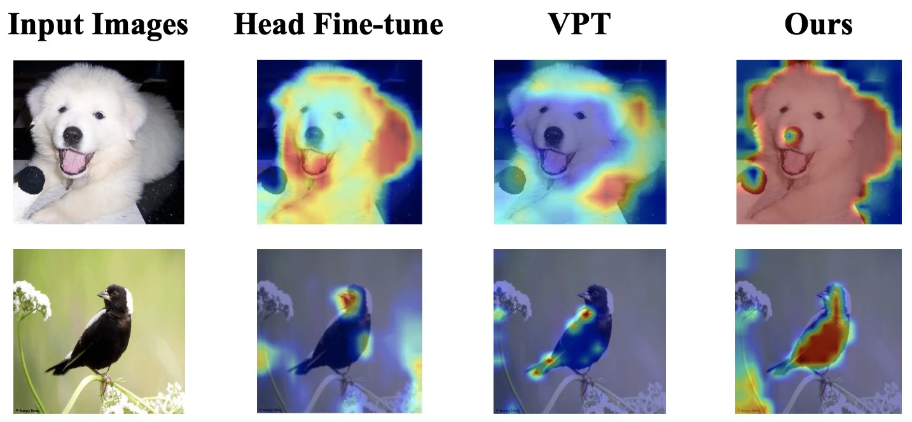

Prompts should carry visual meaning.
Explicit semantic priors give prompt tokens a stronger inductive bias than randomly initialized embeddings alone.
Cascaded Semantics injects color, texture, shape, and attention-derived priors into visual prompt tuning so frozen vision backbones adapt with richer semantic guidance.
Abstract
Visual prompt tuning adapts large frozen vision backbones with a small number of trainable tokens, but conventional prompts can be semantically under-specified and brittle across datasets.
This work builds a cascaded prompting framework that extracts color, texture, shape, and attention-map priors, then integrates them as semantic prompts. The result is parameter-efficient transfer that improves classification and localization behavior while tuning only a small fraction of parameters.
Three claims
Explicit semantic priors give prompt tokens a stronger inductive bias than randomly initialized embeddings alone.
Combining low-level appearance, shape, and attention cues lets each transformer stage receive information matched to its role.
The approach tunes about 0.74% of parameters while improving results across FGVC, HTA, and VTAB-style transfer tasks.
Method
Low-level cues capture appearance regularities that are useful for fine-grained and specialized categories.
Shape priors encode object boundaries and geometry, complementing appearance prompts.
Self-attention maps expose where the frozen model already looks, allowing prompts to reinforce task-relevant regions.

Prompt Budget
semantic prompts + frozen backbone = transfer with 0.74% tuned parameters
Results


Why it matters
Prompt tuning is attractive because it avoids full fine-tuning, but a small prompt budget makes the choice of prompt information especially important.
Cascaded Semantics shows that frozen vision models can be steered more reliably when prompt tokens are grounded in visual priors that the task can actually use.
Citation
If our work is helpful to your research, please consider citing this paper. Thank you.
@article{xiao2026cascadedsemantics,
title = {Prompting Vision Foundation Models with Cascaded Semantics},
author = {Xi Xiao and Xingjian Li and Cheng Han and Tianyang Wang and Guosheng Hu and Yunbei Zhang and Lin Zhao and Runmin Jiang and Xi Li and Xiao Wang and Min Xu},
journal = {Transactions on Machine Learning Research},
year = {2026},
url = {https://openreview.net/forum?id=SSsobNZJPO}
}